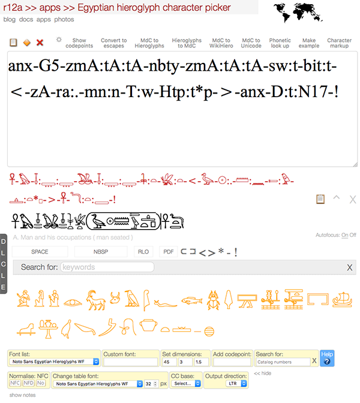
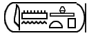
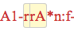

Select the thing you want help with:

Text area
This is where you see characters appearing as you select them from the panels lower down or where you paste text into the picker. Once you have some text here, you can perform various operations on it, or simply copy it to the clipboard for use elsewhere.
The controls just above the text area allow you to interactive with the text in various ways. They mostly work on highlighted text within the text area, or if there is no highlight they work on all the text. Controls near the bottom of the picker allow you to change font, font size, line-height, text direction, etc.
Controls above the output area
Controls above the input box allow you to run various operations on the text in the box. Most of them work on what you have selected within the box, or the whole box if nothing is selected.
Copy, select, delete ( ). The icons on the left above the input box allow you to copy the text to the clipboard, select the text or delete the text, respectively.
). The icons on the left above the input box allow you to copy the text to the clipboard, select the text or delete the text, respectively.
Show codepoints. Produces a list of the Unicode code points in the input box. You can usually follow a link from a code point item to more detailed information about that character.
Convert to escapes. Opens a new window for the converter app, which shows various different ways of representing the text in the input box using escapes.
MdC to hieroglyphs. Converts text written in the Manuel de Codage style into hieroglyphs.
You can do this for a single MdC code, or for a string of them. For example, add the following to the output area:
z:A1*Z1-p-Z7-wn:n-i-n:p*Z7-E15-x:D43-Z7-Y1:n-A1-r:n-f-!
Then click on this control and the following converted string will appear in the secondary output area.
𓊃:𓀀*𓏤-𓊪-𓏲-𓃹:𓈖-𓇋-𓈖:𓊪*𓏲-𓃢-𓐍:𓂤-𓏲-𓏛:𓈖-𓀀-𓂋:𓈖-𓆑-!
From there you can replace the original text or add to it, or copy-paste the result elsewhere.
Hieroglyphs to MdC. Does the opposite to that of the previous control, converting text written in hieroglyphs into the Manuel de Codage style. Try the example above in reverse.
When converting in this direction, because one hieroglyph may map to alternative MdC strings, you may need to select from the alternatives offered by the control (shown in a yellow box). Simply click on the alternative you want when they are displayed by the picker.
MdC to WikiHiero. Displays the highlighted MdC (ASCII) string as hieroglyphs in 2-dimensional arrangements just below the output area. For example, <-i-mn:n-R4:t*p-> becomes:

The code for this section was derived from the WikiHiero pages at http://aoineko.free.fr/. The logic and graphics were developed by Guillaume Blanchard (Aoineko), S. Rosmorduc, G. Watson, and J. Hirst.
Images are currently used to represent characters, in order to achieve the correct placement. At some point in the future, font designs with appropriate positioning rules and a few new Unicode characters should allow for this positioning to be achieved easily using fonts.
MdC to Unicode. Converts MdC codes, singly or in combination, to Unicode-based phonetic strings. For example, H-mA-A-t becomes ḥ-mꜣ-ꜣ-t.
Phonetic look up. Many of the hieroglyphs are associated with 1-, 2- or 3-consonant pronunciations. Many such pronunciations are stored in the database behind the picker. If you know the pronunciation, you can look for corresponding hieroglyphs as follows. (Note that this lookup is far from exhaustive!)
Type the sequence of consonants using Unicode characters (not McD equivalents) into the output box and highlight them. Then click on Phonetic look up. Hieroglyphs that match that character or sequence of characters will be displayed below the output box, and can be added to the output box by clicking on them. (Note that if you still have the search string highlighted in the output box those characters will be replaced by the hieroglyph.)
You will find the panel Latin characters useful for typing characters that are not accessible via your keyboard. The panel is displayed by clicking on the higher L in the grey bar to the left. Click on a character to add it to the output area.
For example, if you want to obtain the hieroglyph 𓎝, which is represented by the 3-character sequence wꜣḥ, add wꜣḥ to the output area and select it. Then click on Latin characters. You will see the character you need just above the SPACE button. Click on that hieroglyph and it will replace the wꜣḥ text in the output area. (Unhighlight the text in the output area if you want to keep both and add the hierglyph at the cursor position.)
Make example. This may be useful to speed up the creation of examples. You can create an example with four parts, delimited by /, in the following order: [1] Egyptian text, [2] IPA transcription, [3] other transcription, [4] meaning. You don't need to ap all four elements, but if you want to skip one in the miple of the sequence, use //.
Character markup. This may be useful to speed up the creation of markup for a specific character or set of characters. Select one or more characters in the output area, then click this button. It will return something like the following for each of the characters:
<span class="uname">U+13002 EGYPTIAN HIEROGLYPH A003</span> (<span lang="egy">𓀂</span>)
When displayed on an HTML page that code will look like this:
U+13002 EGYPTIAN HIEROGLYPH A003 (𓀂)
Secondary output area
This area receives the output of various tools. Note that the text is editable.
The icons to the right (  ) allow you to copy the contents of this area to the clipboard, insert the contents into the main output area, or close this subwindow, respectively. When you insert the contents of this subwindow into the main output area, the text will overwrite any highlighted text, otherwise it will just be inserted at the current cursor position.
) allow you to copy the contents of this area to the clipboard, insert the contents into the main output area, or close this subwindow, respectively. When you insert the contents of this subwindow into the main output area, the text will overwrite any highlighted text, otherwise it will just be inserted at the current cursor position.
Some conversions produce ambiguous output. In this case, you will be offered two alternatives on a yellow background, eg.  presents you with the alternatives 'r' or 'rA'. Simply click on the alternative you want, and the picker will discard the rest.
Character names
As you mouse over characters in the selection areas of the picker, you will see the code point and character name appear here.
In this picker you will also see the category as you mouse over the orange category selectors, which makes it much easier to find a given category. Also, keywords are appended to the character names, where they exist.
Autofocus
When working on an iPad or similar device, you should set this to Off
The vertical grey bar to the left allows you to turn on/off a number of panels that can help create the text you want.
Default. Turns off all input aids and closes all panels.
Latin characters. Displays a panel of lowercase Latin characters you are likely to need for phonetic transcription. It is particularly useful for setting up a search by pronunciation (see above).
Capital Latin characters. Displays a panel of uppercase Latin characters for use in phonetic transcription.
Latin to Egyptian. Displays a panel of Latin characters used for transcription, but when you click on them they insert hieroglyphs into the output area. These are 26 hieroglyphs represented by a single consonant. Think of it as a shortcut if you want to find 1-consonant hieroglyphs by pronunciation.
Where a single consonant can be represented by more than one hieroglyph, a small pop-up will present you with the available choices. Just click on the one you want.
Egyptian alphabet. Displays a panel with the 26 hieroglyphs that the previous panel produces. In many cases this is a quicker way of typing in these hieroglyphs.
Click on these items to add them to the main output area.
RLO is the invisible Unicode control character that starts a range of text that displays all characters from right-to-left. Such a range should be terminated using the PDF control. RLO will make the characters that follow it to progress from right to left.( Alternatively, you can select more controls > Output direction to set the direction of the whole output box to RTL/LTR override. The latter approach will also align the text to the right of the box.)
I haven’t yet found a Unicode font that also flips the glyphs horizontally as a result of apply right-to-left directionality. I’m not entirely sure about the best way to apply directionality to Egyptian hieroglyphs, so I’m happy to hear suggestions.
Alongside the direction controls are some characters used for markup in the Manuel de Codage, which allows you to prepare text for an engine that knows how to lay it out two-dimensionally. (The picker doesn’t do that.)
Keyword search
The picker associates most hieroglyphs with keywords that describe the glyph. These are based on the descriptions in lists by Gardiner and James P. Allen. This part of the picker allows you to search for characters by keyword.
The results appear immediately below the input field. Click on characters in the results to add them to the main output area.
Searching for ripple will match both ripple and ripples. Searching for king will match king and walking. If you want to only match whole words, surround the search term with colons, ie. :ripple: or :king:.
Note that the keywords are written in British English, so you need to look for sceptre rather than sceptre.
Keywords can be entered in any order. Results will be for characters that have all the space-separated keywords present in the database.
If you want two or more words to be searched for as a single unit, replace the intervening spaces with + signs. Note that this reduces the ability to find words in any order, eg. vulture egyptian will not return the same results as vulture+egyptian.
Each space-separated item of search input is treated as a regular expression, so if you want to search for two words that may have other words between them, use .*. For example, ox .* palm will match ox horns with stripped palm branch. You can search for the union of two or more items by separating words by |, eg. king|queen will search for characters with descriptions containing either king or queen.
(Note: to search for a character based on the Unicode name for that character, eg. w004, use the search box in the yellow area below.)
Category-based input
In this part of the picker, characters are grouped into Gardiner's standard categories. Click on one of the orange characters, chosen as a nominal representative of the class, to show below all the characters in that category.
Click on one of those to add it to the main output area.
As you mouse over the orange characters, you’ll see the name of the category appear just below the output box.
Controls on the yellow background
Left-hand controls. These controls at the bottom of the page allow you to modify fonts used, the font size, line height, and the height of the output box.
Add codepoint. You can add characters to the output box by typing codepoints and escapes in the Add codepoint field and hitting return. This will accept HTML numeric character references, javascript and other programming escapes, U+ Unicode notation, or just simple codepoint numbers separated by spaces. All codepoint numbers (including those in escapes) must be hexadecimal.
Search for. Since the names of the characters in the Egyptian hieroglyph block are all similar, in this picker this search control is adapted to find a character by its catalogue number, eg. M004. Matching characters are displayed just below the keyword search input control.
Click on X to remove the suggested characters.
More controls
Click on more controls to reveal the less commonly used controls described here.
Normalise. All text is added to the main output area in Unicode normalisation form NFC by default. You can change to NFD or no normalisation by clicking on the buttons in the yellow area. Note that normalization only takes place when you click on a character – text pasted into the box won't be normalised until you click on another character above, or click on a button in the yellow area.
Change table font. Allows you to change the font and size of the characters you click on in the main selection areas.
CC base. You would normally expect combining characters, such as accents and vowel signs, when displayed alone to be associated with a dotted circle, however these font glyphs are handled inconsistently from one browser/font to the next. The picker is set up for a given web font initially, but if you change the table font you may need to do something to ensure that combining characters display in a way that helps you click on them.
The CC base control allows you to specify a base character that will be used before each combining character (or no base character). This should hopefully help for most font and browser combinations.
Output direction. This allows you to set the direction of the characters in the whole output area to be right-to-left or left-to-right. It overrides the bidi algorithm while doing so.
In principle, when the characters flow right-to-left the character glyphs should be flipped. Whether this happens depends on the font you are using. (The fonts currently listed in the Font list control don't do this.)